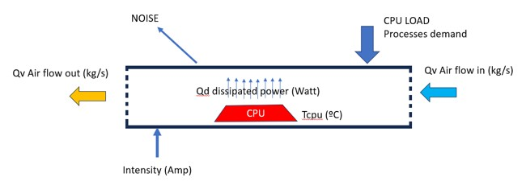
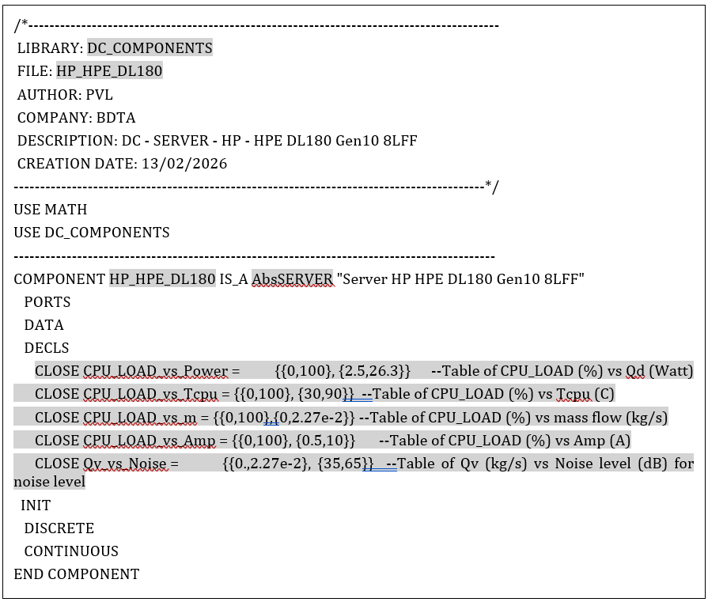
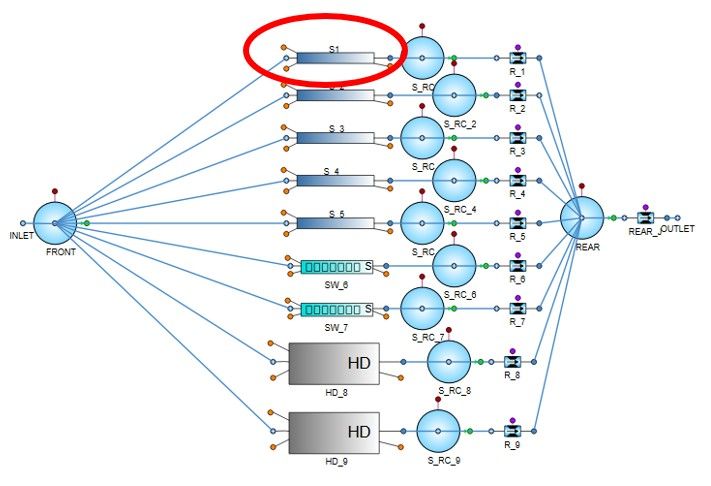

This document explains a standardized, vendor-neutral methodology for creating SIMBOTs which are semantic expressions of mathematical simulation models. Building on foundations established by the SPHERE EU project, this document introduces and explains the semantic framework (adhering semantic web standards) created to structure functional equipment data and multi-dimensional performance curves and standarsise market components in a digital product catalogue . By bridging the gap between component manufacturers and software developers, this methodology drastically reduces the time and implementation costs of large-scale 0D-1D mathematical simulations while safeguarding proprietary manufacturer know-how and industry intellectual property.
SIMBOTs initial concept was a registered achievement of the SPHERE EU project . They were used to represent some pilot simulated components, to represent building and HVAC equipment’s. Models included a detailed description of the ventilation discipline, with human models and complex air fluid mixtures as well. It is explained in a white paper published by SPHERE project [1] .
The final intention of SIMBOTs is to reduce the cost and time implementation of simulation models. It is part of a methodology which tries to adopt applications from aerospace or nuclear into the construction business. This needs a drastic reduction in cost and implementation time. But benefits could be extended since initial design to final exploitation or decommissioning phase.
In mathematical simulation practice (also known as 0D-1D simulation), the operator spends a lot of time collecting information and specs of market equipment’s. Many times, the operator has to use parametric models from the vendor libraries, and adapt those parametric simulation components to the specific needs of a model, making some assumptions and admitting compromises. This is justified if the cost and time restrictions are not the main ones. But as soon as they are more and more critical, a model is just not affordable or it is not suitable in the normal design process, even if the simulation is providing valuable information. So, standardized and ready to use components and libraries could be helping to reduce this functional gap, opening a new potential methodology affecting design and all the rest of phases.
Orientation to real time is another key. If simulation can be running quicker than the physical asset behaviour, then an additional source of information other then monitoring could be available, providing a way to make monitoring more robust or the implementation of advanced control solutions.
The concept of SIMBOTs shall be a market agreement for representing the functional mathematical model of equipment and components. This includes all possible disciplines, like electrical, fluid networks, air ventilation, process equipment’s, spaces, humans, etc. There is no conceptual limitation. And the natural stakeholders, shall be manufacturers of those equipment’s and software developers, implementing libraries to be used in their legacy or open-source software.
For one specific type of equipment, the methodology for representing with SIMBOTs the market models could be similar, just changing the performance curves. And this could have some practical implications in the test lab or certification of the model. But this is out of the scope of this CWA.
This CEN Workshop Agreement (CWA) aims to define a methodology for creating SIMBOTs.
This methodology includes:
This methodology helps to improve the collaboration between manufacturers and software developers, reducing the time and cost of model implementation.
There are no normative references in this document.
For the purposes of this document, the following terms and definitions apply. ISO and IEC maintain terminological databases for use in standardization at the following addresses:
3.1
simulation
Software process which replicates a system functionality in order to predict actual behaviour.
3.2
simulation component
Fundamental, modular element of a software simulation system, representing a subsystem or entity with a predefined, generalized, and reduced behaviour that can be reused across different simulation models.
3.3
component digital twin
CDTw
Digital twin of a component
SOURCE: EN 18162:2026, 3.4, modified - Note 1 to entry and Example have been removed
3.4
digital twin
DTw
Digital representation of a target entity with data connections that enable convergence between the physical and digital states at an appropriate rate of synchronization.
SOURCE: EN 18162:2026, 3.5
3.5
components library
Organized, reusable collection of pre-defined, mathematical, or logical models that represent physical or conceptual entities within a simulation environment.
3.6
abstract component
Foundational, reusable model definition within a component library that cannot be directly instantiated (used) in a simulation on its own. Instead, it serves as a base class or template, defining shared ports, parameters, and fundamental equations that are inherited by more specific child components.
3.7
SIMBOT
Open source, semantic expression of the mathematical model of a market equipment describing its functionality. It is oriented to real time execution, and it is in agreement with the manufacturer performance description. This mathematical model should be “parameter free”.
3.8
simulation DECK
Standalone, executable simulation model exported as a "black box" that can be run independently of the main software environment. It encapsulates all compile-time and run-time dependencies, enabling the creator (supplier) to deliver a secure, interactive simulation to a user who does not have simulation software installed.
3.9
OPC Unified Architecture
Platform-independent, secure, and open-source communication protocol designed for industrial automation and the Internet of Things (IIoT). Developed by the OPC Foundation, it enables seamless data exchange, interoperability, and modelling from field devices to cloud systems.
3.10
simulation model tracking system, SMTS
A specialized, real-time, or near-real-time computational framework that runs in parallel with a physical process or system. It combines dynamic simulation models with actual field data to track the current operating state of the system, correct model parameters, and predict future behaviour.
3.11
performance curve
Graphical representation illustrating the relationship between a machine's or system's output capabilities and its operational inputs. These curves are used to predict performance under varying conditions, optimize efficiency, and ensure equipment is properly sized for specific applications.
3.12
Digital Product Passport, DPP
EU-mandated digital record containing comprehensive data on a product's origin, materials, sustainability, and repairability.
3.13
phasorial representation, DQ
Mathematical method in electrical engineering that converts time-varying sinusoidal waveforms (AC signals) into stationary complex numbers or vectors, known as phasors (D real part, Q imaginary part). A phasor represents the magnitude (amplitude) and phase angle of a signal, simplifying AC circuit analysis from differential equations into algebraic operations.
3.14
residuals
Comparison between simulation generated values and monitoring of the same magnitude. It is made by simple difference (subtraction).
3.15
Supervisory Control and Data Acquisition, SCADA
In control engineering, a computer-based system combining hardware and software to monitor, control, and analyse process systems in real-time. It enables remote operation of devices, optimizing efficiency and safety.
The information relating to a SIMBOT is divided in:
General information is any information that refers to the SIMBOT as an entity, adding the necessary context to identify a SIMBOT in a unique and precise, unambiguous way. This general information includes the entities contained in the following table.
| Entity | Values |
|---|---|
| Manufacturer | Original manufacturer (not reseller). Owner intellectual property, specifications and controlling the update, downgrade or recycling. |
| Model | Specific model of the equipment. This shall not be a generic description or a series of models, but a precise market model. |
| Discipline | This value shall be one of the disciplines classifications 1 |
| Abstract component | This is just a name supporting the mapping with the vendors abstract components mapping. Vendor may have or not the same abstract component name. |
| Version | SIMBOT version. In Annotations, history of versions shall be described. |
| Date | Date of publication in the knowledge graph. History of publications shall be detailed in Annotations. |
| Power | This value in W shall describe the nominal power of the equipment. |
| Status | This value shall be one of the status classifications 2 |
| Annotations | MODEL history. Data sheet reference. SIMBOT Version history. SIMBOT Date of publication history. Reference to Digital Product Passport information. |
|
1 Disciplines classification values can be for example: Building, HVAC, Data Center.
2 Status classification values can be for example: Demo, Estimated, Validated. | |
General information shall not replicate information which is already present in digital product passport knowledge graphs. Functional information of SIMBOTs must be aligned with catalogues or DPP information, but not replicating information which is already there. Instead, SIMBOT must be focussed on functional description, rather than geometrical, potential use, market utilities or maintenance instructions. That non-functional structured information shall be accessible thanks to general information of the SIMBOT
The performance information shall contain the name of the concept, the input(s), the outputs, performance curves linking the input(s) and outputs, and outputs used for SMTS. Input(s) and outputs shall be defined with initial values, format and units. Performance curves shall be defined as curve by points, and they may have several dimensions. SMTS shall be several outputs to get redundancy with monitoring values.
Ancillary information shall be included references of the basement information to define the SIMBOT. This may be references to specs or datasheets, certified lab tests or any other methodology.
For the representation of the SIMBOT a semantic expression shall be adopted. It is neutral and can have all the mathematical content needed. Information about general data of the market model shall be avoided, and the ontology and knowledge Graph shall be aligned with digital product password applications but not including information which may be present in those resources. An example is provided in annex A.The SIMBOT information shall be semantically structured following a public ontology.
The organization by disciplines and the existence of abstract components implies the preparation by the software developer of these abstract components and functional libraries on their own software platform. The abstract component name included in the SIMBOT information has no content. However, there must be an equivalent component on the part of the software developer. The final organization of the component libraries by the developer shall be the sole responsibility of the developer and shall include component validation models. Both the organization by disciplines and the relationship of abstract components require continuous maintenance and publication, and the knowledge base of the O4BSIM ontology is used for this purpose.
In general, almost all equipment requires electrical power to work. The introduction of the electrical discipline with sampling frequencies on the order of minutes makes it necessary to use a phasorial representation. The components of this discipline, therefore, shall not include electrical components for the time domain, but DQ components with phasorial representation.
In general, SIMBOTs interact with internal and external control loops. In the case of an internal regulation of the SIMBOT, all those adjustments that have a temporary response below the minute shall be avoided, simplifying the behaviour of the equipment only with a performance curve
Real-time simulation means that the integration of the system is solved during the physical execution. This requires a very careful and efficient representation of the components, so that integration times do not exceed the pace of execution in large models. We can consider the simulation to be executed satisfactorily if the integration times are approximately one order of magnitude below the physical execution. For example, physical sampling every 5 min (300 s) would require integration times of approximately 30 s.
In real time, the simulation model (which can be an executable or what we call DECK) would receive information from adjustments or field signals. The DECK returns values integrated in that range. And finally, these values can be compared with monitored values, monitoring the operation of the equipment in real time.
Because the simulation is run with field inputs, there is an intrinsic one-step delay in the simulation output versus monitoring. This should be taken into account in the SMTS.
It would be possible to integrate multiple DECKS using inputs and outputs from both. However, the practical co-simulation that would be achieved in this way can falsify the real behaviour of the system. If this is the case, thinking about large models, it is important to avoid the mutual influence that may exist between sections of the installation.
For the development of models, a common representation methodology is necessary, in addition to having component SIMBOTs. This would affect, on the one hand, the most basic processes that are simulated and, on the other hand, the way in which systems are implemented that are faster in their response than sampling times. Engineering practice and new standards help solve that problem.
An observation window in a simulation model tracking system is the specific time interval or spatial range during which a sensor, model, or entity actively records data and monitors the system's state. It defines the boundaries for data collection, filtering, and analysis, separating relevant events from noise or data outside the area of interest.
For the implementation of SMTS it is not essential to have historical data, so only a portion of the data over time would be enough for the execution of the comparison algorithms. Therefore, we can speak of a observation window in time for SMTS processes, which depends on the dynamics of the processes of the system.
Algorithms for comparing simulation and monitoring results can be of many types. Not to be forgotten is the one-step delay limitation.
A first comparison can simply be made by differentiating values between simulation and monitoring. These values are named as residuals.
More advanced algorithms could compensate for one-step delay, take into account additions or other operations between variables, or consider not only current values but also derivatives or integrals. In some cases, these operations can already be performed in the simulation DECK, but in others they can be carried out in the simulation and monitoring integration platform (which could be a SCADA system or a similar software resource in real time).
The simulation DECK needs control commands (RUN, RESET, integrate a single step, simulation time, etc.) as well as variables, INPUTs/OUTPUTs. To exchange information with the DECK, several communication protocols are possible. Among them, the OPC UA protocol would allow us to exchange control commands and variables. The communication protocol must be used by both the simulation DECK and the SCADA or real-time system being used (it could also be a real-time database).
Since the SIMBOT functionally describes the behaviour of a computer, there could be the potential danger of making public knowledge and proprietary information of the manufacturer. By expressing the SIMBOT with performance curves, the aim is to avoid any detail that could compromise the manufacturer's ownership. This marks a limit in terms of the developments of the SIMBOTs, which shall not incorporate the internal programming of the equipment or details of internal materials or systems. In this way, the manufacturer's know-how is protected.
Based on the open and semantic definition of the SIMBOT, all development and implementation of the developer's software system library is owned by the developer. That is, from the definition of the performance curves and the name of the abstract component, all subsequent development corresponds to the developer. The SIMBOT therefore respects the intellectual property of the developer, who keeps his development system intact without the need to make the programming of its components public.
Performance curves can be constructed from public information from the manufacturer in product specifications or data sheets. In some cases, these properties are certified by third parties, and the information incorporated responds to standardized test conditions. The development of SIMBOTs does not require anything new in relation to the functional information that already exists today.
The same equipment may have several ways to be conceptualize. In this example case, an air ventilated server of the market (2P 2U HPE ProLiant DL180 Gen10) is circulating air through the box to keep the CPU temperature under control. It can be considered the CPU LOAD as input. Based on CPU LOAD demand value, we can be calculating the Tcpu (CPU temperature), the Qd (dissipated heat power (W)), the Qv_in and the Qv_out (mass flow ventilation in kg/s) and the NOISE generated by the air flow.

| Variable / Term | Description |
|---|---|
| CPU LOAD | It is the process demand in % of the CPU |
| Intensity (Amp) | Electrical intensity Amp absorbed from the power network (Amp) |
| Tcpu | CPU temperature (C) |
| Qd | Dissipated heat by the CPU which is added to the circulated air inside the server box (W) |
| Qv in | Mass Air flow entering the box in Kg/s |
| Qv out | Mass Air flow going out the box in Kg/s with increased temperature |
| NOISE | Noise dissipated by the box in DB’s |
The general information of the server SIMBOT can be summarized in the following table.
| Entity | Values |
|---|---|
| Manufacturer | HP |
| Model | HPE DL180 Gen10 8LFF |
| Discipline | DATA CENTERS | Abstract component | AbsServer |
| Version | 0.0 |
| Date | 9APR2026 |
| Power | 1000 W | Status | DEMO |
| Annotations | For demo purposes only |
In case of this concept of air ventilated server, we consider INPUT the CPU_LOAD. This would be the demand processing of the server (instantaneous or the mean value over a period of time). We can use the OUTPUT of one of the performance curves as INPUT for another relationship. For example, we can use the mass flow as INPUT to calculate the NOISE.
From the CPU_LOAD several outputs are calculated. The mathematical relationship (performance curves) is described in the following table.
| Entity | Performance curve | Notes |
|---|---|---|
| CPU_LOAD_vs_Power | {{0,100}, {2.5,26.3}} | Table of CPU_LOAD (%) vs Qd (W) |
| CPU_LOAD_vs_Tcpu | {{0,100}, {30,90}} | Table of CPU_LOAD (%) vs Tcpu (C) |
| CPU_LOAD_vs_m | {{0,100},{0,2.27×10-2}} | Table of CPU_LOAD (%) vs mass flow (kg/s) |
| CPU_LOAD_vs_Amp | {{0,100}, {0.5,10}} | Table of CPU_LOAD (%) vs Amp (A) | Qv_vs_Noise | {{0.,2.27×10-2}, {35,65}} | Table of Qv (kg/s) vs Noise level (dB) for noise level |
The information related to a SIMBOT will be expressed in a knowledge graph following a specific ontology. The semantic content or knowledge about a SIMBOT shall be expressed in triples following the standards RDF/OWL.
As an example, a software vendor could be integrating the information of the SIMBOT in a component following the code structure below.

In this component we can see it is included in a library called DC_COMPONENTS (Data Center components), the name of the component is the name in the HP_HPE_DL180, it is using an abstract component of the vendor called AbsSERVER and the performance curves are included in the DECLS section of the code.
The vendor can assign a symbol to the component and work in schematic model, connecting the component with other components of the vendor or other SIMBOTs translated into components.
In the following figure, the server SIMBOT as library component of the vendor inserted in a schematic of a rack is included.

| Indicator | Definition Space |
|---|---|
| Red circle | One of the components created based on the server SIMBOT |
| Y | Definition boundary alignment value for Y tracking |